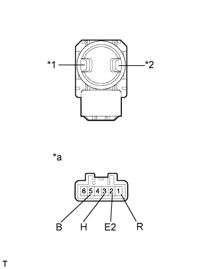
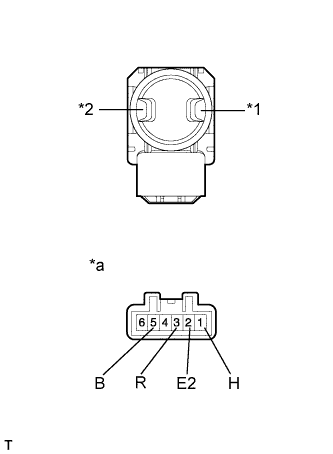

LUMBAR SWITCH > INSPECTION |
| 1. INSPECT LUMBAR SWITCH ASSEMBLY (for Driver Side) |
|  |
Measure the resistance according to the value(s) in the table below.
| Tester Connection | Switch Condition | Specified Condition |
| 3 (H) - 5 (B) | Hold | Below 1 Ω |
| 1 (R) - 2 (E2) | ||
| 2 (E2) - 3 (H) | Off | |
| 2 (E2) - 1 (R) | ||
| 2 (E2) - 3 (H) | Release | |
| 1 (R) - 5 (B) |
| *1 | Hold Switch |
| *2 | Release Switch |
| *a | Component without harness connected (Lumbar Switch) |
| 2. INSPECT LUMBAR SWITCH ASSEMBLY (for Front Passenger Side) |
|  |
Measure the resistance according to the value(s) in the table below.
| Tester Connection | Switch Condition | Specified Condition |
| 1 (H) - 5 (B) | Hold | Below 1 Ω |
| 3 (R) - 2 (E2) | ||
| 1 (H) - 2 (E2) | Off | |
| 3 (R) - 2 (E2) | ||
| 1 (H) - 2 (E2) | Release | |
| 3 (R) - 5 (B) |
| *1 | Hold Switch |
| *2 | Release Switch |
| *a | Component without harness connected (Lumbar Switch) |